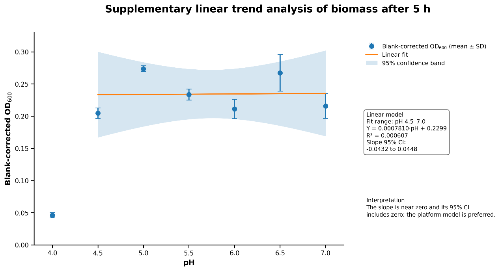
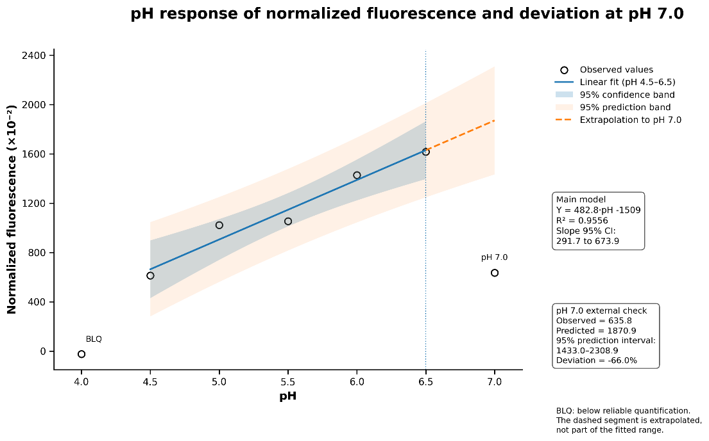
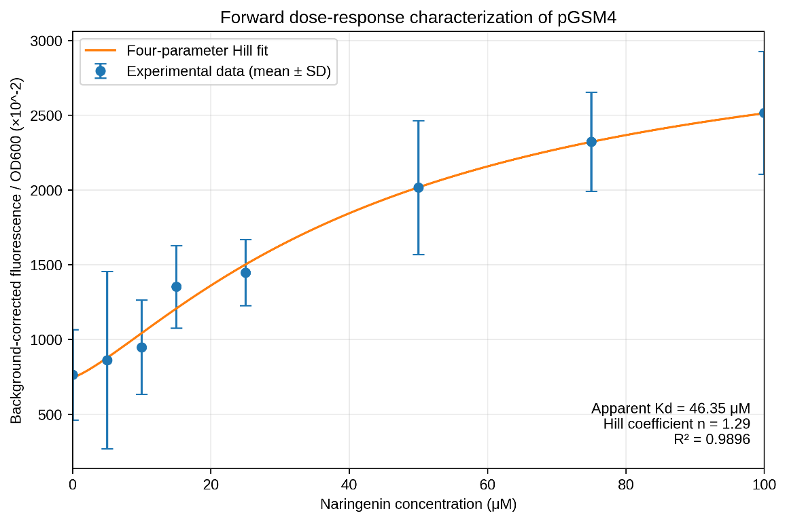
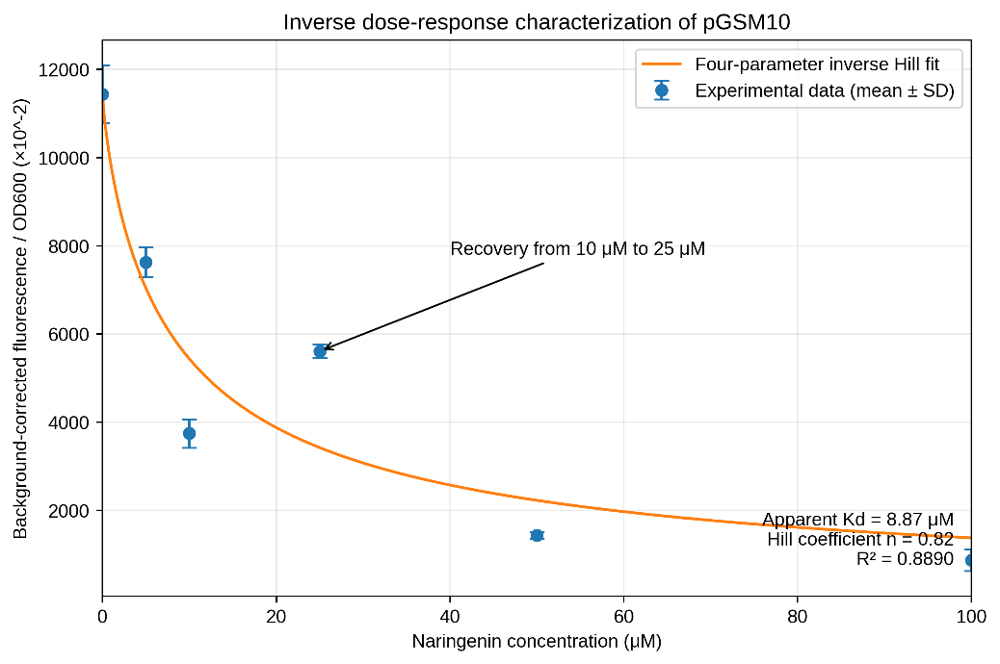
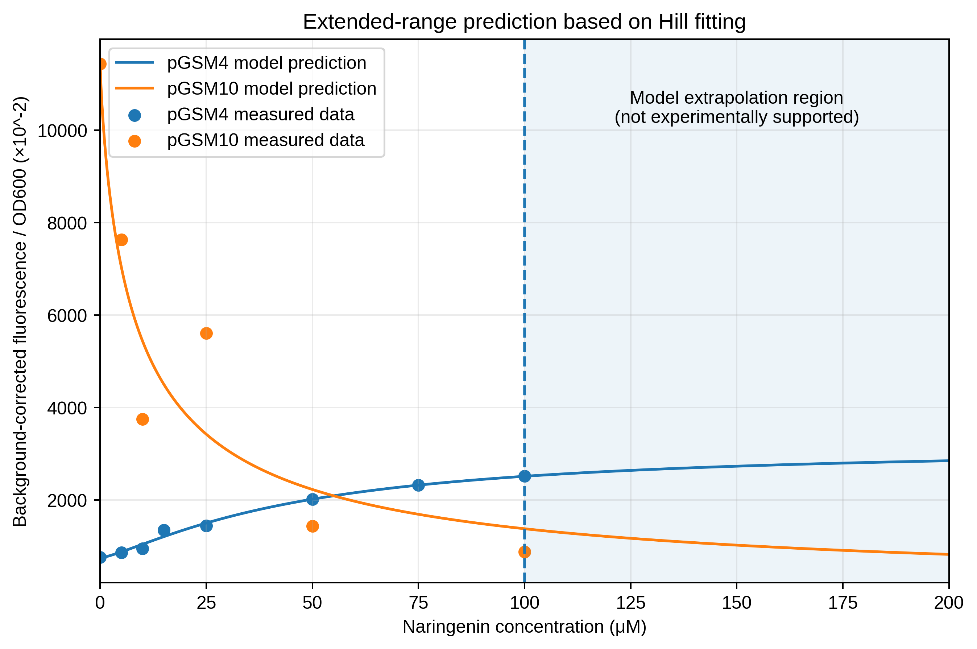

iGEM Wiki · NariViva
Results
Experimental journey
Results Overview
We characterized the FdeR/PCadBA-LacI regulatory system through a series of fluorescence-based experiments designed to evaluate its responses to environmental pH and naringenin concentration.
Construction and Assembly
The characterization used the corresponding verified plasmid constructs described in the Experiment section.
PCadBA-LacI/J23100-LacO-eGFP
The pH-responsive module used composite part BBa_26FQVOBH, containing the PCadBA-LacI regulatory module coupled to the J23100-LacO-RBS-eGFP-T7 terminator reporter cassette. It was used to evaluate the relationship between environmental pH and reporter output.
FdeR-PfdeA-eGFP
The isolated naringenin-responsive module used BBa_265WPK4G. It established the FdeR-PfdeA response independently before evaluation of the complete circuit.
Complete FdeR/PCadBA-LacI Circuit
The complete circuit contained tandem PfdeA and PCadBA regulatory inputs upstream of LacI. The LacI module was oriented in reverse relative to the downstream J23100-LacO-RBS-eGFP-T7 terminator cassette, allowing characterization under combined pH and naringenin conditions.
Before functional characterization, the constructs were sequence-verified to confirm the intended DNA assembly and orientation. Only verified constructs were used in the fluorescence experiments.
pH-Dependent Behaviour
The PCadBA-LacI/J23100-LacO-eGFP system was tested after 5 h of cultivation at pH 4.0, 4.5, 5.0, 5.5, 6.0, 6.5, and 7.0.
Biomass analysis
Blank-corrected OD600 was analyzed to determine whether pH-dependent fluorescence changes could be explained by differences in bacterial growth. Across the fitted range of pH 4.5–7.0, OD600 did not show a significant linear relationship with pH. The fitted slope was 0.000781 OD600 per pH unit (95% CI: −0.0432 to 0.0448; R2 = 0.000607). The confidence interval included zero and the explained variance was negligible.
Normalized fluorescence response
Between pH 4.5 and 6.5, normalized fluorescence increased approximately linearly with pH: Y = 482.8 × pH − 1509 (R2 = 0.9556). The 95% confidence interval for the slope was 291.7–673.9, indicating a positive association within this fitted range.


Naringenin-Dependent Behaviour
The isolated FdeR-PfdeA-eGFP module was characterized at pH 6.5 using naringenin concentrations of 0, 5, 10, 15, 25, 50, 75, and 100 μM. Background-corrected fluorescence normalized to OD600 increased with naringenin concentration and was well described by a four-parameter Hill model.

Complete Circuit under Naringenin Stimulation
The complete FdeR/PCadBA-LacI circuit was characterized under the same pH 6.5 naringenin-gradient conditions. Unlike the isolated module, the complete circuit showed an inverse relationship between naringenin concentration and normalized fluorescence.

Interpretation of the inverse response
Increased naringenin activates the FdeR-PfdeA regulatory branch, increasing LacI expression. More LacI strengthens repression through LacO, reducing eGFP output. The isolated module and complete circuit therefore show opposite fluorescence responses because the integrated circuit places the FdeR-dependent input upstream of a repressor-output relationship.
A deviation from the fitted inverse Hill trend occurred around 25 μM naringenin, where measured fluorescence was higher than expected. The response was not perfectly described by a simple Hill relationship across all concentrations and may reflect biological or experimental variation.
Comparison of Naringenin-Response Models
The forward pGSM4 model predicts an increasing response that approaches a plateau. The inverse pGSM10 model predicts a decreasing response that approaches a lower plateau.
At 100 μM naringenin, the pGSM4 model approached approximately 2.5 × 103 normalized fluorescence units, while the pGSM10-2 model shown approached approximately 0.9 × 103 units.

Naringenin Biosynthetic Pathway Verification
The pathway was designed to connect tyrosine metabolism to naringenin production through four enzymatic steps involving TAL, 4CL, CHS, and CHI.
The corresponding pathway constructs were assembled and verified by PCR and sequencing, confirming the presence and sequence integrity of the intended pathway components. The CHI component also included a C-Myc tag to facilitate protein-level detection by Western blot.
The Results.docx provides a caption for this figure but does not include an image. Add the pathway verification figure when its source image is available.
Experimental Validation Status
| Module | Current status | Evidence |
|---|---|---|
| PCadBA-LacI/J23100-LacO-eGFP | Characterized across pH 4.0–7.0 | OD600-normalized fluorescence analysis |
| FdeR-PfdeA-eGFP | Characterized across a naringenin gradient | Four-parameter Hill model |
| Complete FdeR/PCadBA-LacI circuit | Characterized under naringenin stimulation at pH 6.5 | Inverse Hill model |
| TAL–4CL–CHS–CHI pathway | Constructed and sequence-verified | PCR and sequencing |
| CHI protein expression | Pending | Western blot |
| Naringenin production | Pending | HPLC |
Overall Result
Fluorescence-based characterization established measurable responses to both environmental pH and naringenin concentration.
The PCadBA-LacI/J23100-LacO-eGFP module showed a positive relationship between pH and normalized fluorescence within the supported range of pH 4.5–6.5. The isolated FdeR-PfdeA-eGFP module showed a concentration-dependent increase in reporter output, while the complete FdeR/PCadBA-LacI circuit exhibited an inverse response to naringenin.
Together, these results support PCadBA and FdeR-PfdeA as regulatory inputs in the NariViva design. Pathway verification provides a basis for protein-level and product-level validation, which will be updated after Western blotting and HPLC analysis.